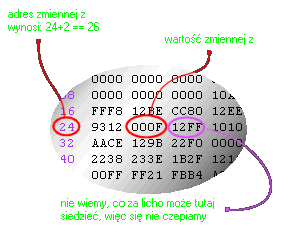

| << Poprzednia czêœæ kursu Spis Strona g³ówna Nastêpna czêœæ kursu >> |
|
int a=56; int* wsk_a = &a; |
|
b = *wsk_a; *wsk_a += 4; |
| *wsk_a += 4; |

|
int main() { short int z = 15; short int* wsk = &z; wsk += 2; //teraz wsk nie zawiera ju¿ adresu z *wsk = 0; //w tym momencie prawdopodobnie namieszaliœmy... return 0; } |
| #include <string.h> |
| char string[] = "Tekst"; |
|
char tab[] = "Tekst"; char* wsk = tab; |
| char* tekst = "Tekst"; |
|
#include <string.h> #include <stdio.h> int main() { char* tekst = "Napis"; char* bufor = "Stojê na murze"; printf("bufor zawiera tekst %s\n", strcpy(bufor, tekst)); return 0; } |
|
#include <string.h> #include <stdio.h> int main() { char* tekst = "Napis"; char* tekst2 = "ik"; printf("%s\n", strcat(tekst, tekst2)); return 0; } |
|
char* zdanie = "Oto jest zdanie"; char* wyraz; wyraz = strtok(zdanie, " "); |
|
char* temp, delim = " ,!?#$%&*"; char* zdanie = "To jest nasze piêkne, d³ugie zdanie! Podoba siê?" temp = strtok(zdanie, delim); do { printf("%s\n", temp); } while((temp=strtok(NULL, delim)) != NULL); |
|
To jest nasze piêkne d³ugie zdanie Podoba siê |
| << Poprzednia czêœæ kursu Spis Strona g³ówna Nastêpna czêœæ kursu >> |